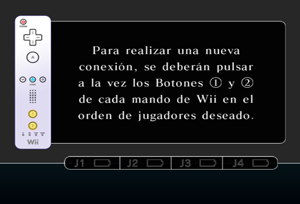
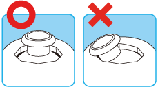

3 |
Preparación del control |
 |


Nota: Si el cierre de tu correa tiene un seguro, bájalo hasta que oigas un clic. Así evitarás que se suelte la correa.
Este procedimiento te permitirá establecer la comunicación entre el control y la consola Wii.
El Wii Remote incluido con esta consola Wii ya ha sido sincronizado con la misma.
Existen dos métodos para sincronizar un control con la consola Wii.
MODO NORMAL: El modo normal de sincronización se utiliza para conectar controles adicionales a la consola Wii o para volver a sincronizar el control incluido con la consola Wii. Una vez sincronizado, el control permanecerá conectado a la consola Wii a menos que sobrescribas dicho ajuste al sincronizar el control con otra consola Wii diferente.
MODO ÚNICO: Este modo te permitirá usar el Wii Remote temporalmente con la consola Wii de un amigo, y que tus amigos puedan usar sus controles con tu consola Wii. No sobrescribirá el ajuste del modo normal guardado en el Wii Remote. En este modo, el control solo se comunicará con la nueva consola Wii mientras esté encendida. Al apagarla, el control dejará de estar sincronizado con la consola Wii.
Nota: Solo un Wii Remote sincronizado en el modo normal puede encender o apagar la consola Wii.
Sincronización en modo normal
Nota: Asegúrate de que el Wii Remote tiene pilas.
Cuando se haya establecido la conexión, el indicador que señala el número del jugador permanecerá encendido . Debes seguir este procedimiento con cada Wii Remote adicional que conectes a la consola Wii.
Sincronización en el modo único
Nota: Este modo desactiva de
forma temporal el ajuste de sincronización del modo normal para todos
los Wii Remotes hasta que se apaga la consola Wii. Cuando se vuelva a
encender la consola Wii, se restaurará la configuración del modo normal.

IMPORTANTE: Si el Wii Remote pierde la sincronización con la consola Wii y no puedes volver a sincronizarlo, revisa el apartado “Solución de problemas” del manual de operaciones de la consola Wii.
Si se ha modificado la posición neutra* de la
palanca de control del Nunchuk y se experimentan problemas de control
durante el juego, haz lo siguiente:

[Posición Neutra] * La "posición neutra" de la palanca de control es aquella en la que la palanca no está inclinada. Si al encender la consola Wii o conectar el Nunchuk al Wii Remote estás inclinando sin darte cuenta la palanca, esa posición pasará a ser la nueva posición neutra, lo que causará problemas de control durante el juego. |

 |
 |
 |